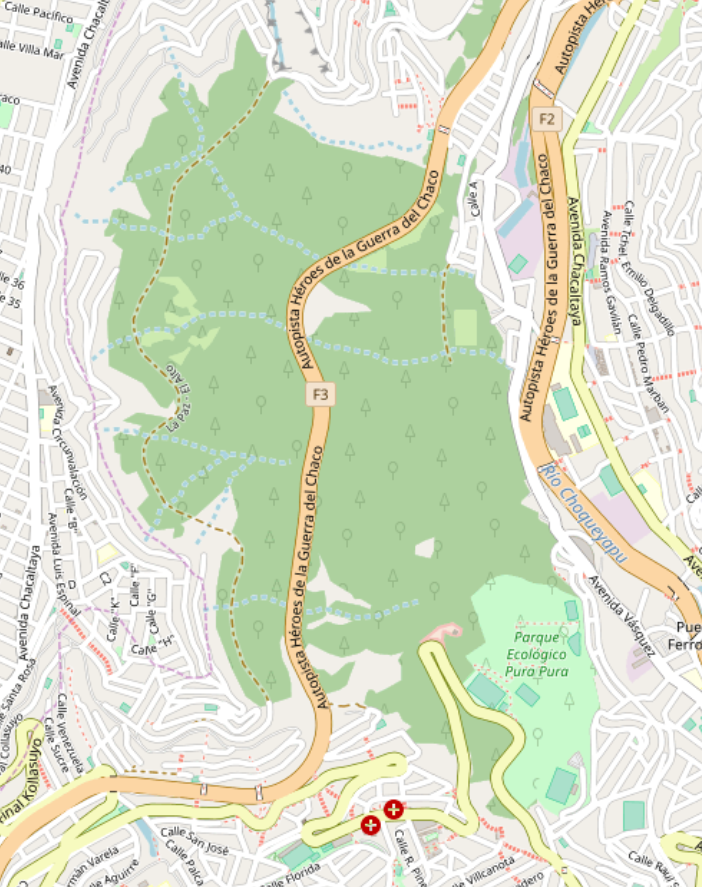
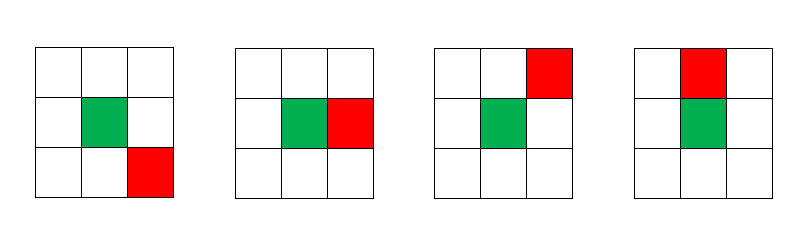
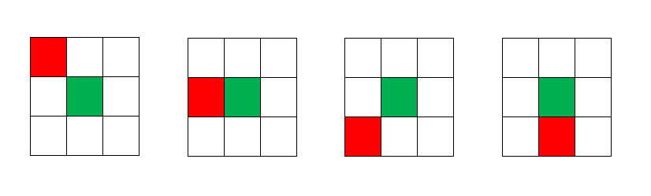
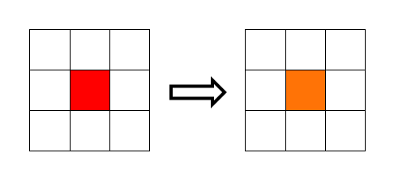

SIMULACIÓN DE INCENDIOS FORESTALES
Autómatas Celulares
CASO DE ESTUDIO: BOSQUECILLO DE PURA PURA
Autopista Heroes de la Guerra del Chaco
Miembros del grupo:
- Rossie Jashiel Gutierrez Sardinas
- Daniel Horacio Fernandez Garcia
- Jhulen Mauricio Mallo Quispe

Reglas:
- Regla 1: Si alguna célula alrededor de una verde está en llamas, esta también estará en llamas.


- Regla 2: Si una célula está en llamas, en la siguiente iteración estará quemada.
